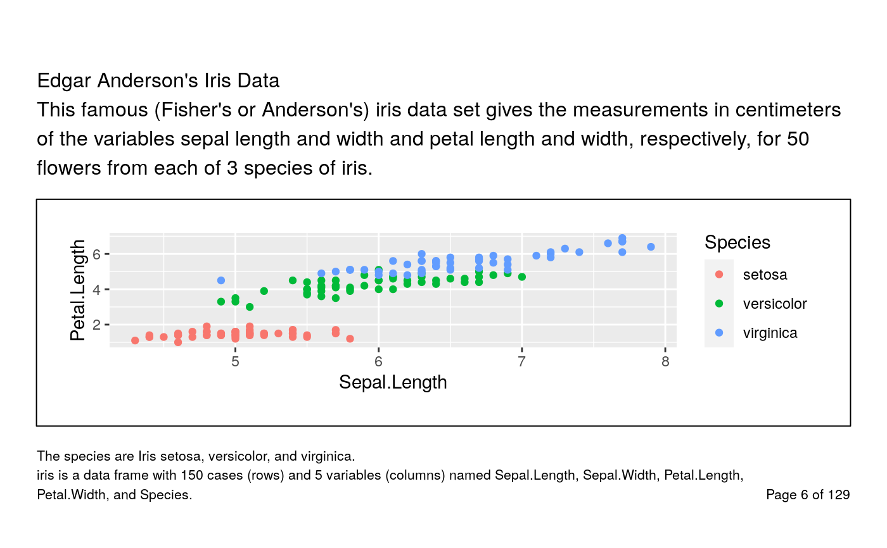

Add Titles, Footnotes, Page Number, and a Bounding Box to a Grid Grob
decorate_grob.RdThis function is useful to label grid grobs (also ggplot2, and lattice plots)
with title, footnote, and page numbers.
decorate_grob( grob, titles, footnotes, page = "", width_titles = unit(1, "npc"), width_footnotes = unit(1, "npc") - stringWidth(page), border = TRUE, margins = unit(c(1, 0, 1, 0), "lines"), padding = unit(rep(1, 4), "lines"), outer_margins = unit(c(2, 1.5, 3, 1.5), "cm"), gp_titles = gpar(), gp_footnotes = gpar(fontsize = 8), name = NULL, gp = gpar(), vp = NULL )
Arguments
| grob | a grid grob object, optionally |
|---|---|
| titles | vector of character strings. Vector elements are separated by a newline and strings are wrapped according to the page with. |
| footnotes | vector of character string. Same rules as for |
| page | string with page numeration, if |
| width_titles | unit object |
| width_footnotes | unit object |
| border | boolean, whether a a border should be drawn around the plot or not. |
| margins | unit object of length 4 |
| padding | unit object of length 4 |
| outer_margins | unit object of length 4 |
| gp_titles | a |
| gp_footnotes | a |
| name | a character identifier for the grob. Used to find the grob on the display list and/or as a child of another grob. |
| gp | A gpar object, typically the output
from a call to the function |
| vp | a |
Value
a grid grob (gTree)
Details
The titles and footnotes will be ragged, i.e. each title will be wrapped individually.
The layout can be illustrated as follows:
Examples
titles <- c( "Edgar Anderson's Iris Data", paste( "This famous (Fisher's or Anderson's) iris data set gives the measurements", "in centimeters of the variables sepal length and width and petal length", "and width, respectively, for 50 flowers from each of 3 species of iris." ) ) footnotes <- c( "The species are Iris setosa, versicolor, and virginica.", paste( "iris is a data frame with 150 cases (rows) and 5 variables (columns) named", "Sepal.Length, Sepal.Width, Petal.Length, Petal.Width, and Species." ) ) ## empty plot library(grid) grid.newpage() grid.draw( decorate_grob( NULL, titles = titles, footnotes = footnotes, page = "Page 4 of 10" ) )# grid p <- gTree( children = gList( rectGrob(), xaxisGrob(), yaxisGrob(), textGrob("Sepal.Length", y = unit(-4, "lines")), textGrob("Petal.Length", x = unit(-3.5, "lines"), rot = 90), pointsGrob(iris$Sepal.Length, iris$Petal.Length, gp = gpar(col = iris$Species), pch = 16) ), vp = vpStack(plotViewport(), dataViewport(xData = iris$Sepal.Length, yData = iris$Petal.Length)) ) grid.newpage() grid.draw(p)grid.newpage() grid.draw( decorate_grob( grob = p, titles = titles, footnotes = footnotes, page = "Page 6 of 129" ) )## with \code{ggplot2} library(ggplot2) p_gg <- with(iris, qplot(Sepal.Length, Petal.Length, col = Species)) p_ggp <- ggplotGrob(p_gg) grid.newpage() grid.draw( decorate_grob( grob = p, titles = titles, footnotes = footnotes, page = "Page 6 of 129" ) )## with \code{lattice} library(lattice) xyplot(Sepal.Length ~ Petal.Length, data = iris, col = iris$Species)grid.newpage() grid.draw( decorate_grob( grob = p, titles = titles, footnotes = footnotes, page = "Page 6 of 129" ) )#> #>#> #> #>grid.newpage() grid.draw( decorate_grob( tableGrob( head(mtcars) ), titles = "title", footnotes = "footnote", border = FALSE ) )